Modern Chinese Art
Horses, by Hsi Peihung (1895 - 1953)
This set was issued by the Chinese Postal Administration. It shows galloping horses. Scott: 1389 - 1399. Some technical data about this interesting issue:
| T28 Galloping Horses Time of Issue: May 5,1978 Perforation: (1)-(6) 11 1/2*11; (7)-(10) 11*11 1/2 Printing Process: Photogravure Size of Stamps: (1) - (6) 30*40; (7) -( 10) 40*30 Sheet Composition: (1) - (6) 50 (10*5); (7) - (10) 50 (5*10) Original Designer: Xu Beihong (Hsi Peihung) Designer: Liu Shuoren Printer: Beijing Stamp Factory |
T28M Galloping Horses [Miniature
Sheet] Time of Issue: May 5,1978 Perforation: 11 1/2*11 Printing Process: Photogravure Size of the MS: 90*40 Original Designer: Xu Beihong (Hsi Paihung) Size of Miniature Sheet: 148*98 Designer: Liu Shuoren Printer: Beijing Stamp Factory Gt028m 5 Yuan, Galloping Horses |
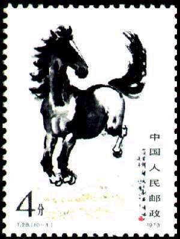 |
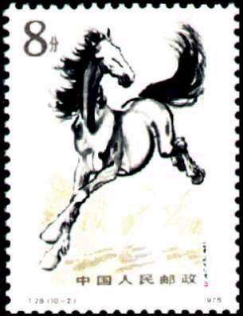 |
The original paintings of "Galloping horses" are the works of the Chinese contemporary painter and artistic educator Xu Beihong (1895-1953). Xu Beihong, a native of Yixing in Jiangsu Province, was a specialist in oil painting, national art painting and sketching.
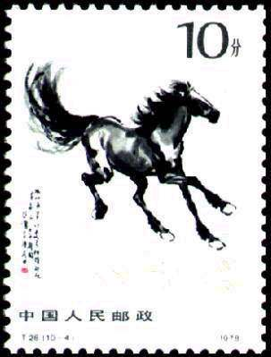 |
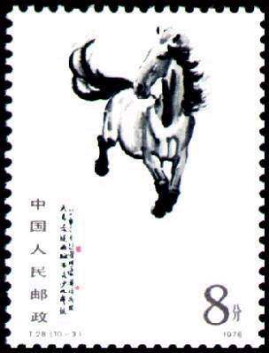 |
There are flowers, birds, landscapes and running animals in his simple and uplifting works. His representative works are "Galloping horses". Horses are favored by painters because of their beauty, robustness and grace.
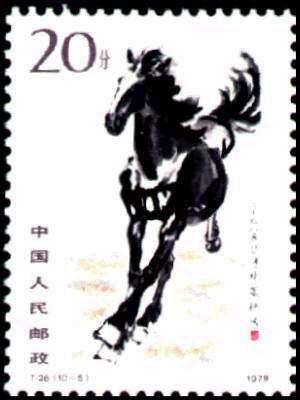 |
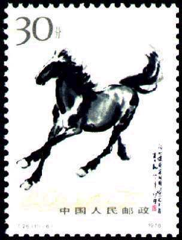 |
Among various painters, from the east or from the west, ancient or modern, Xu is a recognized master in drawing horses. His untrammeled, imposing horses are good known as well in China as abroad.
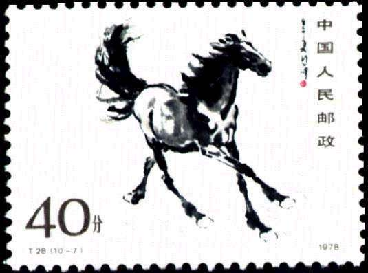 |
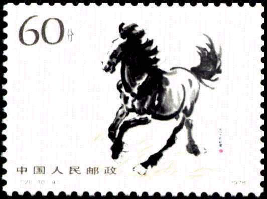 |
The whole set of 10 stamps covers horses painted by Xu Beihong in different periods of his lifetime. In the pictures, each horse looks different from others; some of them jump high with four hoofs in the air. A close look at the horses shows that they are absolutely lifelike, swift as wind and light.
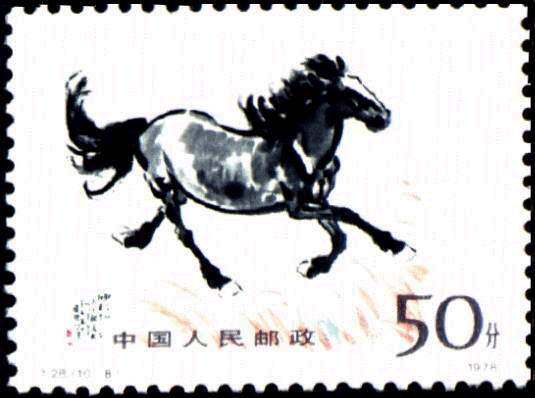 |
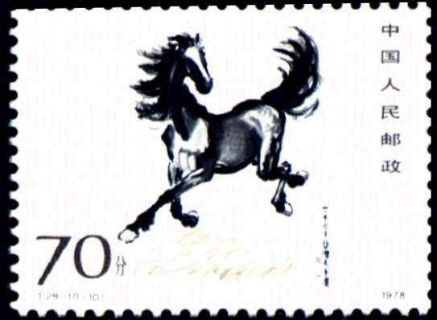 |
In the whole set of stamps, horses in different poses are galloping forward as if they are jumping out of the picture. The galloping horses painted by Xu are unique, beautiful and tasteful Chinese paintings.
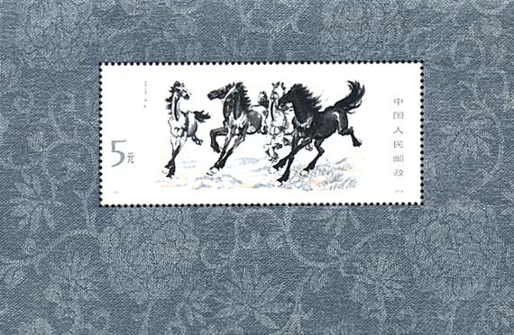
On the souvenir sheet, the four galloping steeds are well designed, following the same pattern as those shown on the stamps. The horses have different poses: some turn back, some jump off the ground, while others look around. The original painting was drawn in 1942; it has a length of 95 cm and a width of 181 cm. Silver gray framework makes it look simple and elegant. This is a typical and significant Chinese painting too. The sheet itself became quite rare and is accordingly expensive.
Link on this site: Horses on Chinese Stamps (Taiwan).